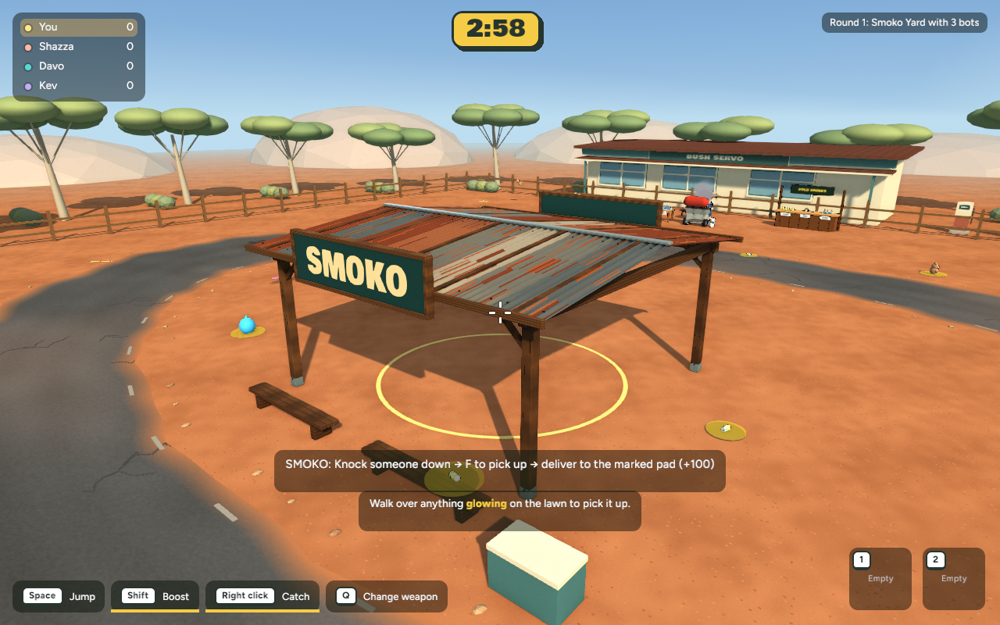
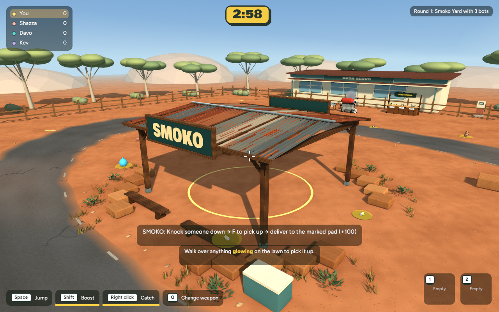
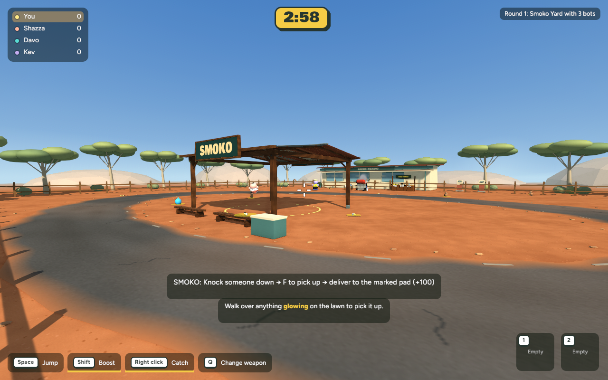
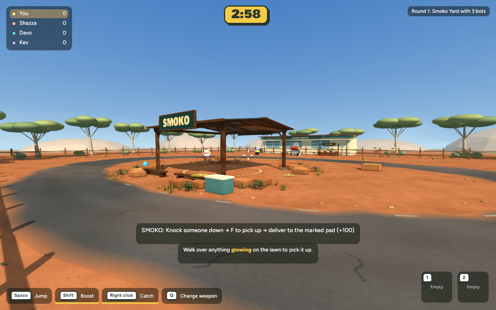
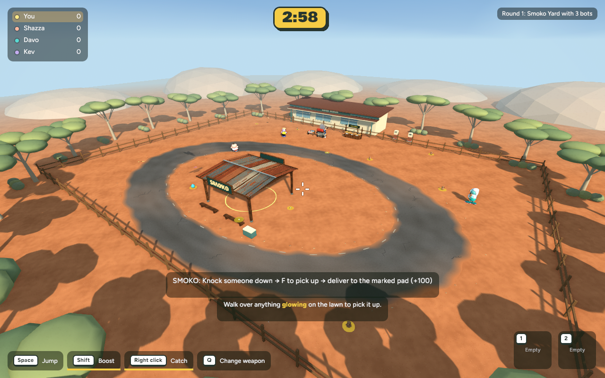
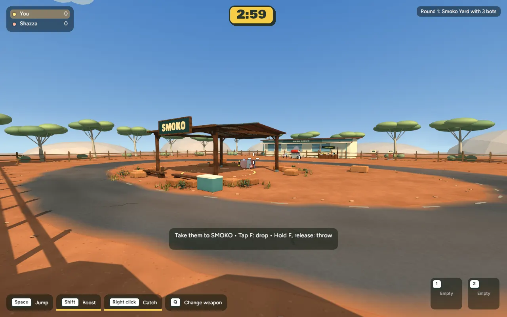

27 October 2026 · Actual native gameplay captures · Stage 2, awaiting review
Low sandstone edging, dry grasses and small saltbush clusters frame the Smoko shelter. Four broad approaches and the delivery circle stay clear. Stones have matching shared collision bounds; plants are decorative.





Scripted native carry/delivery sequence: +100 awarded, carry released. This is a local fixture, not a two-person online session.

| View | Mean ms before → after | Change | 95th percentile ms |
|---|---|---|---|
| overview | 8.279 → 8.195 | -1.0% | 13.121 → 14.431 |
| gameplay | 8.465 → 8.275 | -2.2% | 14.034 → 12.815 |
| close | 8.239 → 8.401 | +2.0% | 12.851 → 13.959 |
600 wall-clock frame intervals per view at 1280×800 after warmup; same camera/settings. Session variation applies; these are not GPU timestamp measurements. No meaningful mean-time regression observed. Some tail latency varies.
438 core tests pass, including collider/visual dimensions, approach clearance and scoring-circle clearance. Native release passes. Browser wasm compilation passed. Backyard smoke capture also completed. Asset: 4,978 triangles, 9 material batches and four 128px embedded grain textures.
Protocol increases to 18 because solid map bounds changed: host and guests need the same updated build. Live browser remains unchanged. No new human multiplayer session was recorded. Trees, servo detailing and furniture remain later stages; this first landscape pass does not match the concept’s full detail.